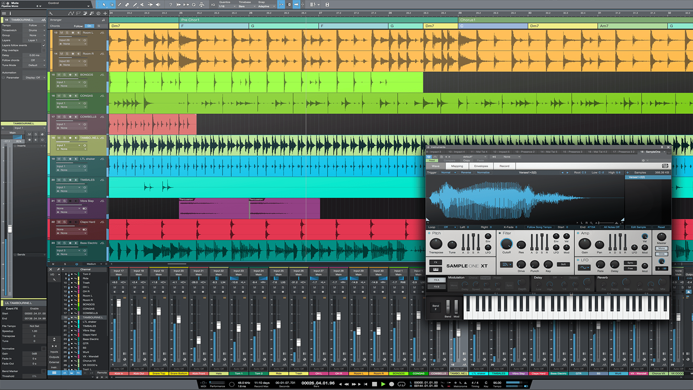

HOME
DAW's
VST'S
NEWS
VIDEOS
Popular DAW'S:
"Ableton Live is a digital audio workstation for macOS and Windows. In contrast to many other software sequencers, Ableton Live is designed to be an instrument for live performances as well as a tool for composing, recording, arranging, mixing, and mastering."
"Cubase is a digital audio workstation developed by Steinberg for music and MIDI recording, arranging and editing. The first version, which was originally only a MIDI sequencer and ran on the Atari ST computer, was released in 1989."
FL Studio is a digital audio workstation developed by the Belgian company Image-Line. FL Studio features a graphical user interface based on a pattern-based music sequencer.
Logic Pro is a digital audio workstation and MIDI sequencer software application for the macOS platform. It was originally created in the early 1990s as Notator Logic, or Logic, by German software developer C-Lab who later went by Emagic. Apple acquired Emagic in 2002 and Logic was renamed to Logic Pro.
Pro Tools is a digital audio workstation developed and released by Avid Technology for Microsoft Windows and macOS which can be used for a wide range of sound recording and sound production purposes.

Studio One is a digital audio workstation application, used to create, record, mix and master music and other audio, with functionality also available for video. It is developed by PreSonus and available for macOS and Windows.